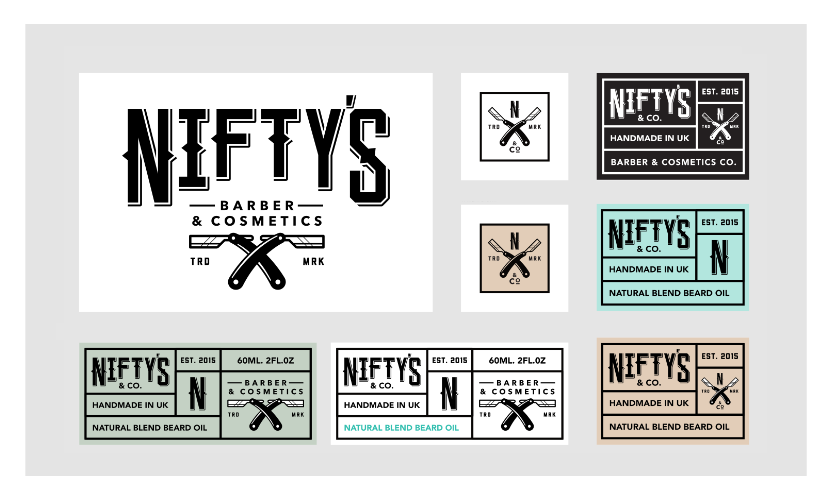

Artboards are discrete design areas, of any shape and size, within the same document, on which you can place design elements. Objects which extend beyond the boundary of an artboard are clipped to the edge of the artboard's design area.

Using artboards, you can convert a single page document into a multi-page, multi-product design project. Their true power lies within their flexibility—artboards have limitless uses.
The size of artboards can be based on presets or customized to suit your needs. They can be moved and resized just like other objects in a document and can be arranged in any way you want—sometimes this will be important to the outcome of the design, other times it simply helps you organize your work.
Artboards also possess their own color and opacity properties, so these can be adjusted at any time during the design process.
Artboards can be exported and printed together or separately, but are all saved together in their parent document.